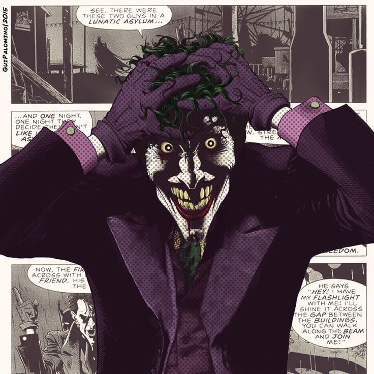
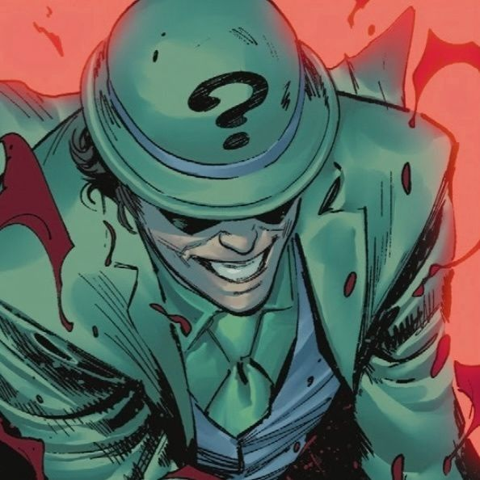
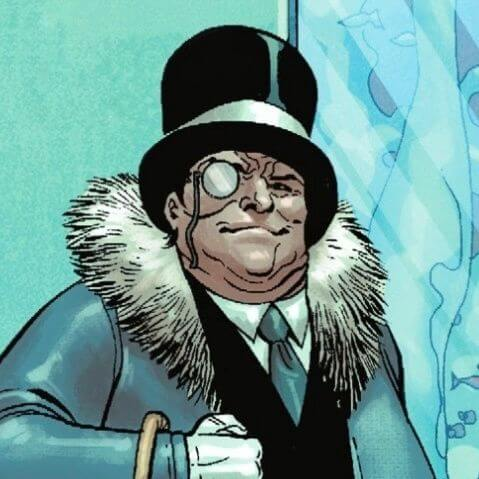
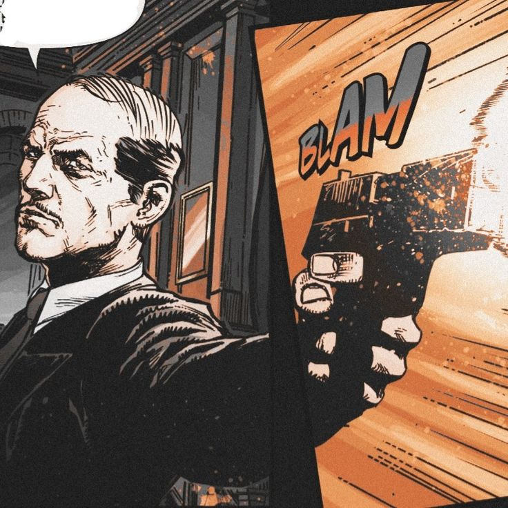
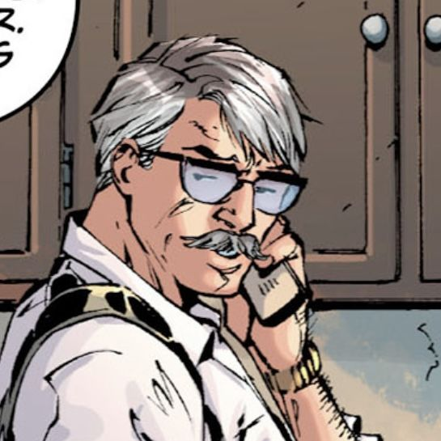
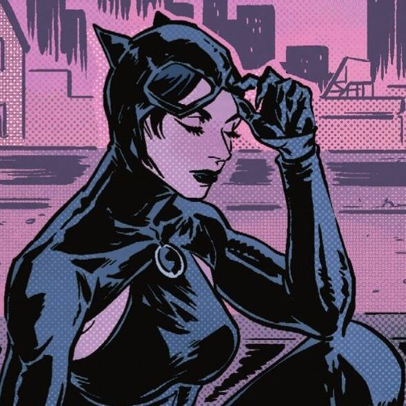
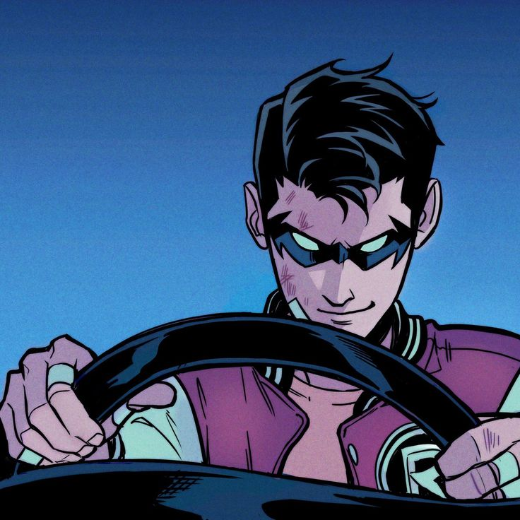
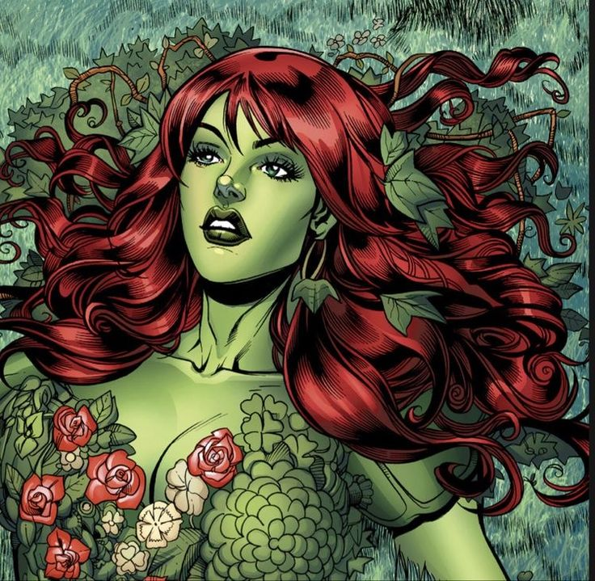

Coringa
O Coringa é um vilão icônico dos quadrinhos da DC Comics, conhecido por sua personalidade caótica e relação complexa com o Batman. Ele usa risadas e piadas para esconder sua natureza violenta. O Coringa representa o caos puro, em contraste com a ordem e justiça simbolizadas pelo Batman. O personagem apareceu em várias formas de mídia e foi interpretado por diferentes artistas, incluindo Heath Ledger, que recebeu um Oscar por sua atuação em "The Dark Knight".

Charada
O Charada, também conhecido como Edward Nygma, é um vilão da DC Comics e inimigo do Batman. Sua característica distintiva é sua obsessão por enigmas e charadas. Nygma, originalmente um genial inventor, se volta para o crime, desafiando Batman com quebra-cabeças complexos. Ele busca provar sua superioridade intelectual. O Charada apareceu em várias mídias, destacando-se por sua astúcia e dedicação aos enigmas.

Pinguim
O Pinguim, alter ego de Oswald Cobblepot, é um vilão da DC Comics e um inimigo recorrente do Batman. Caracterizado por sua aparência peculiar de pássaro e por ser dono de um clube noturno em Gotham City, o Pinguim é um criminoso astuto com uma afinidade por armas de longo alcance e truques de alta sociedade. Apesar de sua estatura curta, ele é conhecido por sua sagacidade e astúcia nos negócios ilícitos. O Pinguim apareceu em diversas adaptações de mídia, destacando-se como um dos antagonistas notáveis do universo do Batman.

Alfred
Alfred Pennyworth é o leal mordomo e confidente de Bruce Wayne, o alter ego do Batman, no universo da DC Comics. Conhecido por sua habilidade em cuidar de Wayne Manor e pela criação de dispositivos para auxiliar o Batman, Alfred desempenha um papel crucial no apoio ao herói. Sua personalidade é frequentemente retratada como sábia, leal e dotada de um senso de humor seco. Ao longo das adaptações de mídia, Alfred é uma figura paternal para Bruce Wayne, desempenhando um papel fundamental na narrativa do Batman.

Duas-Caras
Duas-Caras, ou Harvey Dent, é um vilão da DC Comics e um inimigo notório do Batman. Inicialmente, Dent era o promotor público de Gotham City, conhecido por sua busca implacável por justiça. Após um incidente traumático, metade de seu rosto fica desfigurada, levando-o a adotar a personalidade de Duas-Caras. Ele toma decisões com base no lançamento de uma moeda, representando sua dualidade moral. Duas-Caras é conhecido por seu visual distintivo de metade queimado e metade normal e sua abordagem única à criminalidade. O personagem apareceu em várias mídias, destacando-se como um dos vilões mais complexos do universo Batman.

Gordon
James Gordon é um personagem da DC Comics, conhecido por ser o comissário da polícia de Gotham City. Ele é um aliado próximo do Batman e um defensor da justiça. Gordon é frequentemente retratado como um homem ético e dedicado à aplicação da lei, trabalhando em parceria com o Cavaleiro das Trevas para combater o crime em Gotham. Sua colaboração com Batman é fundamental para a narrativa do universo do herói. O personagem apareceu em várias adaptações de mídia, desempenhando um papel vital na luta contra o crime em Gotham City.

Mulher-Gato
O Pinguim, alter ego de Oswald Cobblepot, é um vilão da DC Comics e um inimigo recorrente do Batman. Caracterizado por sua aparência peculiar de pássaro e por ser dono de um clube noturno em Gotham City, o Pinguim é um criminoso astuto com uma afinidade por armas de longo alcance e truques de alta sociedade. Apesar de sua estatura curta, ele é conhecido por sua sagacidade e astúcia nos negócios ilícitos. O Pinguim apareceu em diversas adaptações de mídia, destacando-se como um dos antagonistas notáveis do universo do Batman.

Robin
Robin é o alter ego de vários parceiros juvenis do Batman nos quadrinhos da DC Comics. O primeiro e mais conhecido Robin é Dick Grayson, que foi o jovem acrobata que se tornou pupilo de Batman após a morte de seus pais. Ao longo dos anos, outros personagens assumiram o manto de Robin, incluindo Jason Todd, Tim Drake e Damian Wayne. Cada Robin trouxe habilidades únicas e dinâmicas diferentes para a parceria com o Batman. O papel do Robin é frequentemente associado à ideia de treinamento e sucessão, oferecendo uma perspectiva juvenil no mundo dos super-heróis.

Hera-Venenosa
Hera Venenosa, alter ego de Pamela Isley, é uma vilã da DC Comics e inimiga do Batman. Sua origem está ligada a experimentos botânicos que a transformaram, concedendo-lhe habilidades tóxicas e uma conexão especial com plantas. Hera Venenosa é conhecida por seu ativismo ambiental radical e sua capacidade de controlar e manipular plantas. Seu visual é frequentemente associado a tons de verde e vermelho, refletindo sua natureza botânica e seu veneno letal. A personagem apareceu em várias mídias, contribuindo para a riqueza do universo do Batman.